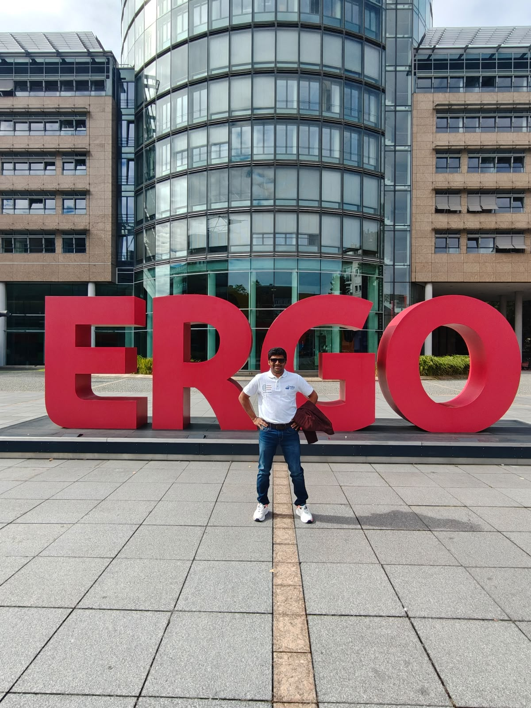
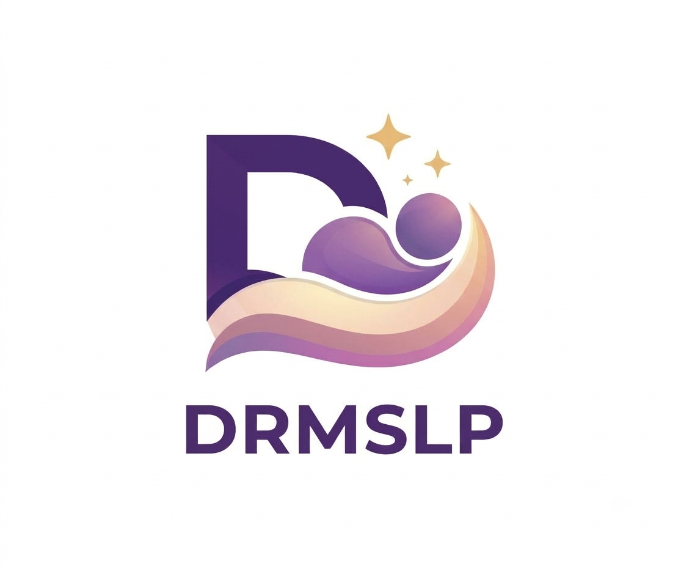
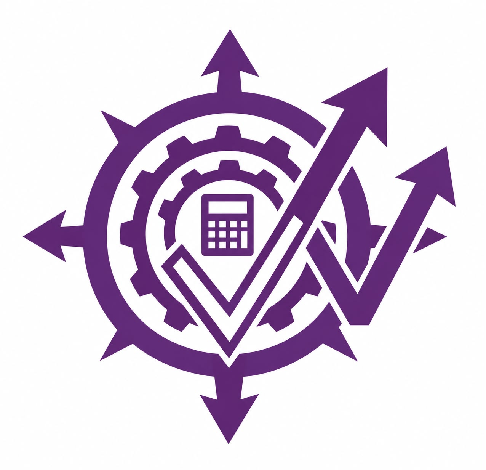

Phase 01
System Diagnostics
What bottlenecks limit scale?
Deep inspection of enterprise data flows, legacy constraints, and latency profiles to map out modernization pathways.
Insights into scalable enterprise architecture, generative AI ecosystems, cloud transformation, and high-performance software engineering from Iconic Dream Focus.

Modern IT transformation starts long before writing code. It requires continuous analysis of infrastructure demands, systematic architectural evolution, and robust agile deployment.
Deep inspection of enterprise data flows, legacy constraints, and latency profiles to map out modernization pathways.

Transitioning monolithic structures to resilient containerized microservices optimized for multi-cloud deployment.

Automated testing pipelines, infrastructure as code (IaC), and continuous integration ensuring secure, continuous delivery.
Technical analyses and reflections on building high-availability enterprise platforms.
Distributed software development relies heavily on robust communication channels, strict API contracts, and automated documentation. How our technical squads maintain alignment across multiple development hubs.
Implementing fine-grained identity access management and secure service meshes across multi-cloud environments.
Integrating regulatory compliance checklists directly into automated CI/CD deployment tracks.
Strategies for indexing massive relational datasets and managing distributed read replicas efficiently.
The rigorous planning, benchmarking, and architectural stress tests preceding production deployment.
Explore our core software offerings and enterprise digital solutions.
Unified digital discovery architecture connecting cross-vertical applications into one cohesive ecosystem.
Heartificially Yours Working Angel — advanced conversational AI engine designed with context awareness and natural semantic workflows.

Contextual location intelligence engine pairing high-performance geolocation data with realtime behavioral insights.
Advanced predictive data analytics dashboard delivering automated forecasting and real-time operational intelligence.

Personalized media streaming pipeline optimized for dynamic content generation and low-latency client delivery.

Automated regulatory compliance engine streamlining enterprise GST calculations, tax workflows, and audit reporting.

Modular microservice orchestration framework connecting legacy corporate architectures with next-gen cloud platforms.

Scaling technology ecosystems from South India to European innovation hubs.
How cross-border technical collaborations, enterprise pitches with global insurance leaders, and participation in international tech summits shape our software engineering roadmap.
Documentation of our technical delegation engagements across international technology expos.

Showcasing scalable enterprise automation platforms to regional industry leaders, culminating in the Emerging Startup Award for South India.
Deep-dive technical sessions and architecture reviews exploring corporate insurance tech integration with ERGO.
Benchmarking cloud architectures and exploring collaborative AI research initiatives within the Paris Region tech ecosystem.

Engaging with enterprise tech leaders on next-generation automation frameworks and secure cloud migration strategies.
A comprehensive two-day architectural symposium highlighting dashboard telemetry, HY-U integrations, and scalable engineering.
Recognized at the Global Business Conclave for excellence in enterprise software development, scalable platform architecture, and innovative cloud automation solutions.

Visualizing telemetry streams and container orchestration before production deployment.
Stress-testing microservice response metrics under extreme load parameters.
Led by John Kiran and our core software engineering units, IDF operates at the intersection of robust backend reliability and intuitive enterprise design.
Our engineering culture emphasizes continuous peer review, open technical discourse, rigorous automated testing, and secure development standards.
We believe great software is built by empowering engineers with modern tooling, clear architectural boundaries, and autonomous problem-solving capabilities.
Foundational engineering beliefs guiding our system design choices and software delivery pipeline.
Every service and API endpoint must solve a measurable enterprise bottleneck rather than introduce unnecessary complexity.
Analytics and state management must remain transparent, auditable, and reliable under distributed network partitions.
Machine learning models must operate with deep domain context and strict data privacy compliance guarantees.
Ship modular components early, measure telemetry continuously, and refine architecture based on real-world usage.
Robust enterprise solutions emerge from close cross-functional communication between engineering and business units.
Systems must continuously evolve alongside shifting security standards, compliance mandates, and cloud capabilities.
Snapshots from our global engineering tours, conference keynotes, and team workspaces.
Official studio dispatches regarding platform upgrades and corporate milestones.
IDF honored at the Global Business Conclave for South India operations.
Strengthening software partnerships across Paris and Düsseldorf.
Connecting regional business and technology pioneers.
Unifying cloud microservice frameworks for global deployments.
Explore our technical documentation, inspect our product architecture, or connect with our engineering team.